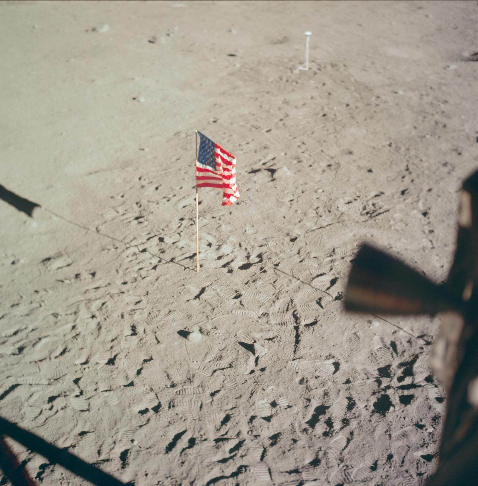
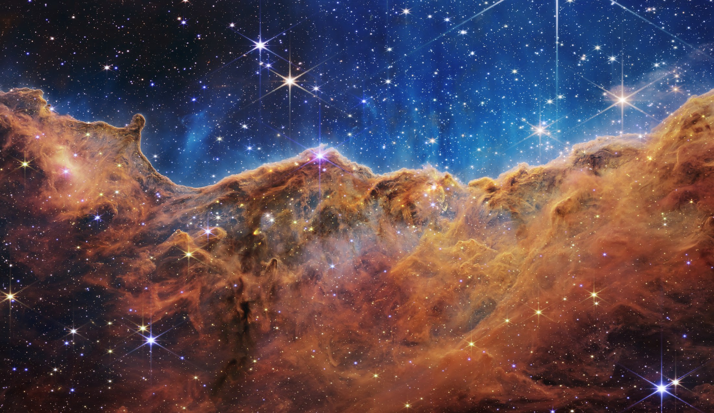
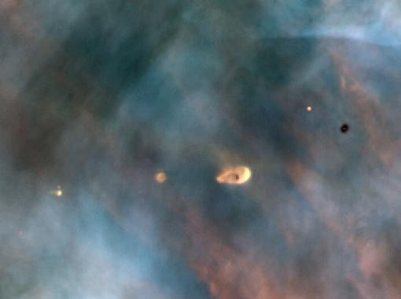
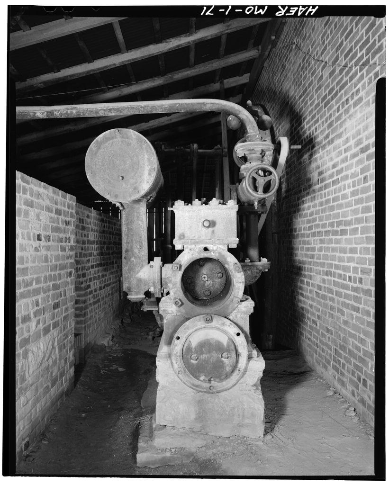
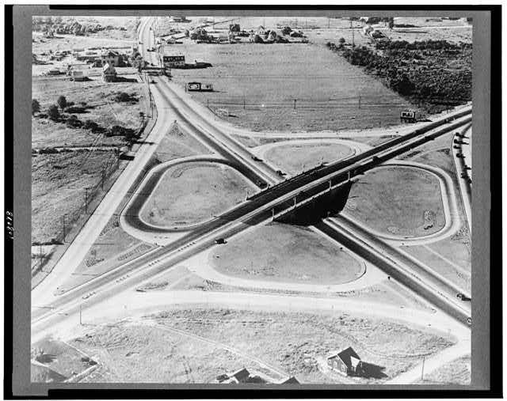
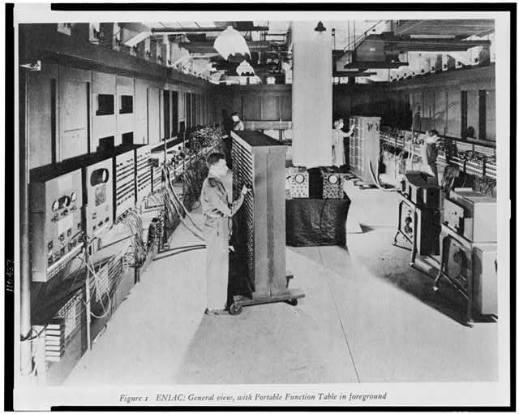
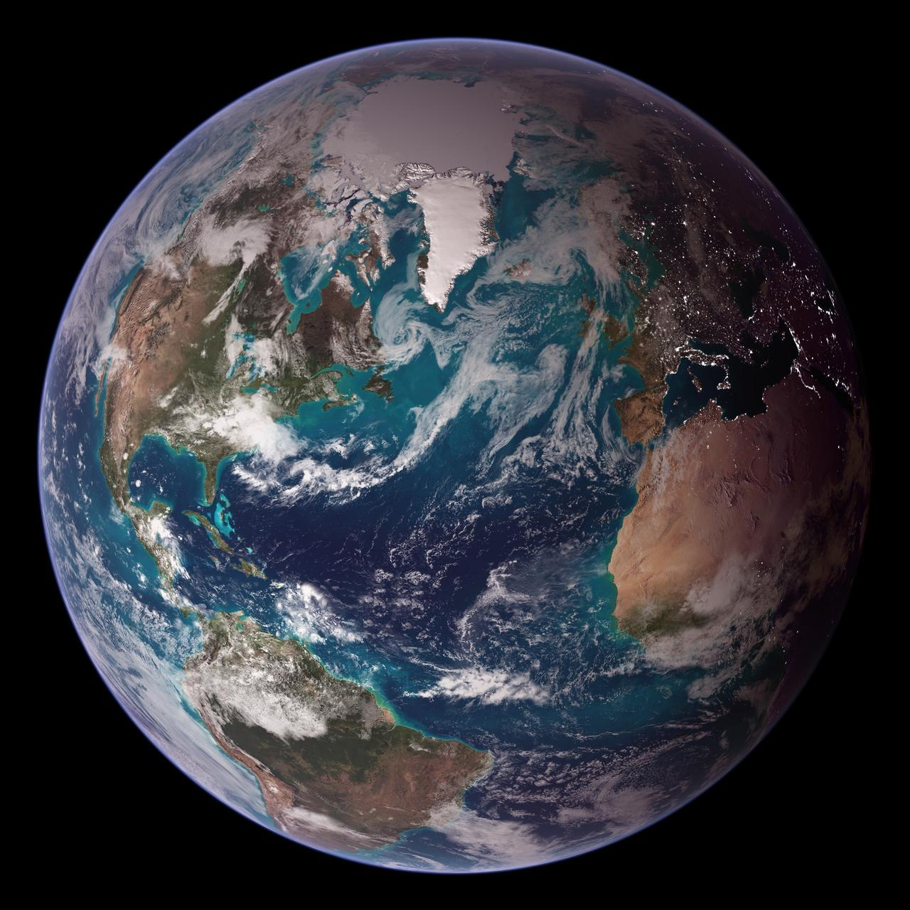
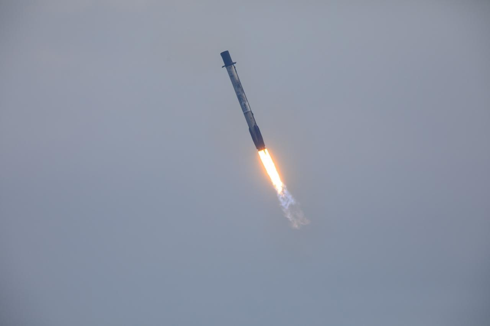

We are all as old as the universe.
About 62 of every 100 atoms in your body are hydrogen. The core of each one was made in the first second, 13.8 billion years ago, and has been travelling ever since.
Scroll forward in time
t ≈ 10 microseconds
Too hot for anything to hold together
The early universe is a plasma of free quarks and gluons at about 2×10¹² K. Nothing has a shape yet.
As it expands, it cools. Below that temperature the quarks lock into threes: a proton and a neutron each hold one quark of every "colour" charge, red, green and blue, which combine to neutral. The protons that sit at the centre of your hydrogen atoms formed here.
This world, which is the same for all, no one of gods or men has made; but it was ever, is now, and ever shall be an ever-living Fire.Heraclitus · fragment 20 · trans. John Burnet, 1892
t ≈ 3 minutes
The whole universe becomes a fusion reactor, for twenty minutes
At about 10⁹ K, protons and neutrons can finally stick. Almost every available neutron ends up inside a helium nucleus.
When it stops, the mix is set: about 75% hydrogen and 25% helium by mass, roughly one helium nucleus for every twelve hydrogen. Traces of deuterium and lithium, and nothing heavier.
Why nothing heavier? No stable nucleus exists with 5 or 8 nucleons, so the easy steps up from helium lead nowhere, and the universe cools too fast to find another route. Your Star Forge keeps the same two gaps. Stars will need hundreds of millions of years to get past them.
t ≈ 380,000 years
The first atoms, and the first clear light
Until now, free electrons scattered every photon, and the universe glowed like the inside of a fog. At about 3,000 K the electrons settle onto the nuclei and the first neutral atoms form.
Light can suddenly travel. That light is still arriving from every direction. It has cooled to 2.725 K and we call it the cosmic microwave background.
t ≈ 100 million years
The dark ages
There are no stars yet. The gas is almost perfectly smooth; its density varies by about 1 part in 100,000.
That tiny unevenness is enough. Gravity always pulls harder where there is slightly more, so the dense places get denser. Clouds of dark matter gather the hydrogen and helium into clumps that fall inward and heat up.
t ≈ 100 – 200 million years
The first star ignites
When the centre of a collapsing cloud passes about 10⁷ K, hydrogen begins fusing into helium and the pressure of that energy stops the collapse. A star is born.
The first stars were made of nothing but hydrogen and helium, and may have been tens to hundreds of times the mass of the Sun. They lived only a few million years.
וַיֹּאמֶר אֱלֹהִים יְהִי אוֹר וַיְהִי־אוֹרAnd God said, Let there be light: and there was light.Genesis 1:3
Inside that star
Everything else in you starts here
The carbon in your cells, the oxygen you breathe, the calcium in your bones and the iron in your blood did not exist yet. Every atom heavier than helium had to be built, one fusion at a time, inside stars like this one, then thrown back into space when they died.
Chapter 2 Enter the Star Forge ↓ Run the fusion yourself, from hydrogen to the iron wall, then set off a supernova.How this chapter was made
- The times and temperatures on the clock are standard cosmology (the ΛCDM model with Planck 2018 values). Between the marked moments the clock interpolates on a logarithmic scale.
- The motion of the dots is choreographed to your scrolling. It is an illustration, not a simulation. In Star Forge, the physics decides.
- The helium fraction is real: about 1 dot in 13 is helium, matching roughly 8% of nuclei by number.
- The colours of hydrogen and helium are their brightest visible spectral lines, H-alpha at 656 nm and helium D3 at 588 nm.
Chapter 2 · inside the stars
Star Forge
Every nucleus here is just two numbers: Z protons and A nucleons. Every reaction is decided by real binding energies. Nothing tells the simulation to stop at iron. Fusion only happens when it releases energy, and past iron it doesn't.
Pick a star, raise the temperature to climb the burning stages, feed it fresh hydrogen, switch on the neutron source for slow capture past iron, then fire the supernova. Hover the bars of the abundance chart to see where each element comes from in the real universe.
- 13.8 ByaBig Bang: hydrogen and helium, nothing heavier
- ~200 MyrFirst stars ignite
- ongoingFusion climbs the periodic table toward iron
- deathSupernova scatters the forge's output into space

A real star-forming region, not an illustration: the edge of a young star cluster carving a cavity into a wall of gas and dust, roughly 7,600 light-years away. Every bright point behind the dust is a star, some newborn.NASA · ESA · CSA · STScI
What's computed and what isn't
- Computed: binding energies come from measured values for light nuclei and the semi-empirical mass formula above them. Reaction energies match measurement: 3α → carbon-12 releases 7.27 MeV, carbon-12 + α → oxygen-16 releases 7.16 MeV, helium + helium → beryllium-8 costs 0.09 MeV. Binding per nucleon peaks at A = 58.
- Emergent: the iron peak. Photodisintegration knocks alphas off loosely bound nuclei at high temperature, and iron and nickel hold theirs by 6–8 MeV, so they survive.
- Fitted: ignition temperatures are fitted to the real burning stages. The Coulomb barrier and beta-decay rates are simplified formulas.
- Compressed: a real stellar core has about 10⁵⁷ particles and burns for millions of years. This has about 230 and runs in minutes, all in 2D.
One more question the forge doesn't answer on its own: what actually keeps a nucleus from growing without limit. Protons and neutrons pull each other together with the strong force, but it only reaches a couple of femtometres. Protons also push each other apart electrically, and that push never turns off, no matter how far apart they are. The small experiment below isn't scripted to break a nucleus apart — it happens on its own, the moment repulsion finally outweighs the short-range pull.
What's computed and what isn't
- Computed: a Morse potential for the short-range strong attraction between any two nucleons, plus real Coulomb repulsion between protons, the same semi-empirical mass formula as the forge above.
- Emergent: the maximum stable nucleus size, and fission. Load uranium-238 and raise electromagnetism past about 1.5× — it splits itself, with no fission rule written anywhere in the code.
Chapter 3 · the visible universe
Gravity Doesn't Stop at One Star
The pull that just built a star keeps building at every larger scale. Star clusters spiral together into galaxies — our own, the Milky Way, holds on the order of a hundred billion of them. Galaxies fall toward each other and merge. Groups of galaxies gather into clusters, and clusters string together into a cosmic web of filaments a billion light-years long, with vast near-empty voids between them.
Light moves fast, but not infinitely fast — 299,792 km/s, one light-year every year. So looking far away is looking far back in time: light from a galaxy a billion light-years off left it a billion years ago. The universe is 13.8 billion years old, which limits how far back we can ever see — but because space itself kept expanding while that light was travelling, the farthest light reaching us now set out from matter that is today about 46.5 billion light-years away. That's the observable universe: a sphere roughly 93 billion light-years across, with whoever is looking always standing at its centre.
- ~500 MyrFirst galaxies assemble from star clusters
- billions of yrsGalaxies merge, grow spiral arms, collide
- ongoingGravity gathers galaxies into clusters, clusters into a cosmic web
- nowThe observable universe: ~93 billion light-years across, us at the centre
Star clusters spiral into a galaxy · galaxies gather into a cluster laced by filaments · the light-speed horizon of everything we can ever see, centred on us. An illustration, paced for reading, not a physics simulation.
Chapter 4 · new worlds
From Ashes, a World
A supernova's debris is mostly still hydrogen and helium, but laced now with everything the star spent its life forging: carbon, oxygen, silicon, iron. Drifting for millions of years, some of that cloud collapses under its own gravity and starts to spin. Rotation is why it flattens into a disk instead of falling straight to the centre — angular momentum has to go somewhere. Dust in the disk collides and sticks, builds into pebbles, then boulders, then planets: heavy elements sinking toward the hot inner disk to become rock, ice and gas surviving further out to become giants. That's the whole reason the inner planets are stone and the outer ones aren't.
Below: a real protoplanetary disk, not a rendering — light from a young star silhouetting a disk of leftover material 56 billion miles across, more than ten times our solar system. Then the same physics, live: pour water into the tank and watch gravity, pressure and surface tension build the waves, splashes and droplets on their own.
- 4.6 ByaA cloud of gas and dust collapses
- 4.5 ByaDust becomes pebbles, then planets
- 4.4 ByaA molten Earth cools; volcanic outgassing builds a first atmosphere
- 4.0 ByaWater vapour condenses into the first rain
- ~3.8 ByaOceans stabilize; the oldest continental crust dates from about here

A young star, 300,000 to a million years old, still wrapped in the disk of gas and dust it formed from — this is what our own solar system looked like, once.NASA · ESA · C.R. O'Dell
A collapsing cloud flattens into a disk · dust clumps into planets · then a long close-up on one of them: a molten young Earth cools, the first rain falls, oceans fill the basins, an atmosphere takes hold, and the first land breaks the surface. An illustration, paced for reading, not a physics simulation.
By about 4.4 billion years ago that disk had cooled into a molten young Earth, its interior still outgassing the water vapour, carbon dioxide and nitrogen that became its first atmosphere. By 4.0 billion years ago the surface had cooled enough for that vapour to condense into the first rain, and it kept falling until it had somewhere to pool — the beginning of the oceans. Where exactly the first dry land stood is still debated, but the oldest surviving scraps of continental crust, found today in northern Canada, date from close to this same stretch of time: by about 3.8 billion years ago, Earth already had oceans, an atmosphere, and at least the beginnings of land.
Droplet Tank, running unchanged: particle water with adjustable gravity, tilt, surface tension and viscosity — pour, stir, drop a ball in, or turn tension down until the surface stops holding together at all.
Chapter 5 · the primordial soup
Lightning Finds a Way
Early Earth's atmosphere held water vapour, methane, ammonia and hydrogen, and its skies discharged constant lightning. In 1953, Stanley Miller and Harold Urey sealed a flask of that mixture, sparked it for a week, and found amino acids, the building blocks of every protein, had formed on their own — and every atom in that flask only knows one rule underneath: fill your free bonds, push away anything you're not bonded to. Nobody told water to bend into an angle. Shape simply falls out of that rule, the same way the iron peak fell out of binding energy back in the forge.
Amino acids also arrive from outside: they've been found inside meteorites older than Earth itself. However it happened, somewhere in a warm pond or a deep-sea vent, simple molecules crossed a line and began to copy themselves faithfully — and once one could do that, evolution could begin.
- ~4.0 ByaPrebiotic chemistry, lightning and all
- 1953Miller and Urey synthesize amino acids
- ~3.8 ByaSomewhere, a molecule starts copying itself
- todayMeteorites still turn up the same building blocks
A shallow, chemical-rich pool under a stormy sky. Each flash marks a moment when raw energy could have driven simple molecules to combine into the first amino acids and, eventually, the first self-copying one.
DNA is where that copying trick still lives. Every cell in you was built by copying a molecule two metres long into a space a few microns wide, without a single mistake in a billion letters. Below, watch a real replication fork move down a strand: helicase unwinds it, primase lays down RNA primers, and two different polymerases build the new strands in two different ways, because DNA can only be read in one direction.
DNA Replication Simulator, running unchanged: helicase, primase, Pol III and Pol I, ligase, Okazaki fragments, proofreading, and the end-replication problem. Hover any position to inspect it, or load a sequence of your own.
DNA is only an archive, though — a gene has to be read before it means anything. RNA polymerase transcribes it into messenger RNA; in your cells, that transcript is capped, its introns are spliced out, a poly(A) tail is added, and it's exported through a nuclear pore before a ribosome ever sees it. The ribosome then reads it three letters at a time, and for each triplet a matching transfer RNA delivers one amino acid, link by link, into a new protein, which folds itself into a working machine. Watson and Crick described the double helix in 1953; by 2003 the Human Genome Project had read all three billion of ours, letter by letter.
Protein Synthesis Simulator, running unchanged: transcription, capping, splicing, nuclear export, and a ribosome translating codon by codon into a folding polypeptide. Click a base in an exon to mutate it and watch the protein change.
Four chapters in, and the thread hasn't broken once: the hydrogen in the first star, the iron in its ashes, the water that gathered on a young planet, the amino acids lightning made from it, and now a molecule that reads itself and builds the next generation.
Chapter 6 Enter the Long Climb ↓ One replicating molecule is not yet a redwood, a whale, or you. Everything after this is what that molecule became, one copying error at a time, for four billion years.Chapter 6 · the long climb
Four Billion Years, Compressed
Nothing in this chapter is a simulation. It's a timeline, the real one, run at a speed you can actually sit through: a single cell learning to divide, its descendants inventing multicellular bodies, crawling out of the water, growing scales then fur then hands, and eventually asking where they came from.
The animation below loops continuously and isn't scroll-linked; scroll past it for the timeline itself, with real dates.
- 3.8 ByaFirst self-copying cell
- 541 MyaCambrian explosion
- 430 MyaLife crawls onto land
- 230–66 MyaAge of dinosaurs, ended by impact
- 300 kyaHomo sapiens
- 1980Where this story picks back up
A single cell to a city skyline, looped. Every stage shown here actually happened, in this order, on this planet.
t ≈ 3.8 billion years ago
The first thing that could be called alive
Somewhere in that primordial ocean, a molecule crossed a line: it could make copies of itself, imperfectly, and the imperfect copies that copied better outcompeted the rest. That's evolution's entire engine, and it needs nothing more than this to start running.
The oldest chemical traces of life are about 3.8 billion years old; the oldest fossils that look unmistakably biological, layered mats called stromatolites, are about 3.5 billion years old. Every living thing on Earth, a mushroom, a shark, you, descends from that same single lineage: LUCA, the last universal common ancestor.
t ≈ 2 billion years ago
One cell swallows another, and doesn't let go
For nearly two billion years, life stayed simple: single cells with no nucleus, drifting and dividing. Then, once, a larger cell engulfed a smaller one, and instead of digesting it, kept it. The smaller cell kept generating energy from inside its new host.
That captured cell is the ancestor of every mitochondrion in every complex cell alive today, including all of yours. Biologist Lynn Margulis spent decades arguing for this, against real resistance, before it became accepted fact.
This one merger is why complex life exists at all: it's what gave cells enough spare energy per gene to afford the extravagance of being big, specialized, and multicellular.
t ≈ 541 million years ago
The Cambrian explosion
Multicellular animals existed before this point, but they were mostly soft, simple, and few. Then, over roughly 20 million years, an eyeblink in geological time, the sea filled with body plans: shells, legs, eyes, spines, the ancestors of nearly every major animal group alive now.
There is grandeur in this view of life... that, whilst this planet has gone cycling on according to the fixed law of gravity, from so simple a beginning endless forms most beautiful and most wonderful have been, and are being, evolved.Charles Darwin · On the Origin of Species, 1859
t ≈ 470 – 375 million years ago
Life crawls onto land
Plants and fungi colonized the shore first, around 470 million years ago, turning bare rock into soil. Insects and other arthropods followed. Then, about 375 million years ago, fish with strong, jointed fins, animals like Tiktaalik, began hauling themselves out of shallow water.
Every limb bone in every land vertebrate, a frog's leg, a bird's wing, your arm, traces back to those same fin bones. It's the same skeleton, endlessly remixed.
t ≈ 240 – 66 million years ago
The age of dinosaurs
Dinosaurs appeared around 240 million years ago and dominated land for roughly 165 million years, an almost incomprehensible span: longer than the time separating Tyrannosaurus from you is from Stegosaurus. Countless generations lived and died, species rising and vanishing, while mammals stayed small, mostly nocturnal, and out of the way.
They never fully left. One lineage of small, feathered dinosaurs survived: birds. The pigeon outside your window is, technically, a dinosaur.
t ≈ 66 million years ago
The asteroid
An object about 10 km across struck what is now the Yucatán Peninsula with the energy of billions of atomic bombs. Wildfires, a global dust cloud, and years of darkened, cooled skies followed. About 75% of all species, including every non-bird dinosaur, went extinct.
It's one of the strangest facts in this whole story: an accident of orbital mechanics, a rock that happened to be in the wrong place, is a direct precondition for your existence. Without it, mammals very likely stay small and marginal indefinitely.
t ≈ 65 – 6 million years ago
Mammals inherit an empty world
With the dinosaurs gone, mammals diversified fast, filling niches that had been closed to them for 165 million years: grazers, predators, swimmers, and eventually, in the trees, primates, small, sharp-eyed animals with grasping hands and forward-facing eyes built for judging distance between branches.
Around 6–7 million years ago, in Africa, one branch of primates split in two. One side became chimpanzees and bonobos. The other became us.
t ≈ 4 – 2 million years ago
Standing up
Early hominins like Australopithecus, the group that includes the famous skeleton "Lucy", walked upright on two legs while still having a small, ape-sized brain: bipedalism came first, big brains came later, in that order. Freed hands could now carry things and eventually shape stone.
The genus Homo appears around 2.8 million years ago. Stone tools, controlled fire, and slowly, over a million years and several now-extinct human species, larger brains.
t ≈ 300,000 years ago
Homo sapiens
The oldest known fossils of anatomically modern humans, found at Jebel Irhoud in Morocco, are about 300,000 years old. For most of that time, we were a small population of hunter-gatherers among several other human species, Neanderthals, Denisovans, others, most of whom we outlasted and some of whom we interbred with.
The nitrogen in our DNA, the calcium in our teeth, the iron in our blood, the carbon in our apple pies were made in the interiors of collapsing stars. We are made of starstuff.Carl Sagan · Cosmos, 1980
Chapter 7 · the toolmaker's brain
The Organ That Went Looking for Trouble
Bipedalism came first and freed the hands. What came next is the part that actually explains everything after it: a brain that grew nearly three times larger than a chimpanzee's, most of the growth concentrated in a prefrontal cortex built for one specific trick — holding an imagined future steady enough to work toward it. A chimp can use a stick to fish termites out of a mound. No chimp has ever sharpened that stick the night before, planning for a mound it hasn't seen yet.
The loop below is the actual mechanism: hand shapes a tool, tool changes what the hand can do, the new capability rewards the brain that planned it, and the next brain grows a little further into that same shape. Nothing here is scripted — it's the same feedback loop, run out over two million years.
- 3.3 MyaOldest known stone tools, predating our own genus
- 2.6 MyaOldowan toolkit: deliberate, repeated flaking
- ~1 MyaControlled fire, likely earlier in places
- ~300 kyaModern brain size and structure in place
Hand to tool, tool to fire, fire to a longer childhood spent learning instead of just surviving — and each turn, a slightly more folded cortex. An illustration, paced for reading, not a simulation.
Fire did something stone tools couldn't: it pre-digested food. Cooked meat and starches deliver far more usable calories than raw ones, and a body that no longer needed a huge gut to slowly ferment raw food could spend those calories somewhere else instead. Brains are expensive — yours burns about 20% of your resting energy at only 2% of your body weight. Cooking is, arguably, the reason a brain that costly was ever affordable.
And a longer childhood is the other half of the trade: human infants are born radically unfinished, with skulls still soft enough to fit through the birth canal, and then take over a decade to reach full capability — a decade in which a growing brain can be shaped by watching, copying, and being taught, rather than by instinct alone. That's not a cost this species paid despite the big brain. It's the same adaptation, worn two ways.
Chapter 8 Enter Civilization ↓ Give that same brain a surplus of food, and it stops solving for survival and starts solving for everything else.Chapter 8 · civilization
Surplus, Stacked
A brain built to hold an imagined future steady is not, on its own, a city — it still needed something to plan toward. That arrived about 12,000 years ago, independently in several regions: farming. A farmer who grows more grain than one family can eat has just invented something evolution never needed — spare time in other people's lives. Surplus food freed some hands to build instead of farm, then to write instead of build, then to rule, trade, and worship instead of any of it. Cities are what surplus looks like once it stops being eaten and starts being built with — mud brick in Uruk, stone in Giza, concrete and steel by the time this sentence is on a screen.
Change stopped moving at the pace of biology and started moving at the pace of culture: agriculture to writing took about 7,000 years; writing to the printing press took 4,500; the chapters below took under 250. Each jump compressed the one before it, and the jump this chapter is really about, harnessing fire on purpose instead of just keeping it, is the one that made all the later ones possible.
- ~9000 BCEJericho, among the first permanent settlements
- ~3100 BCEWriting, in Sumer and Egypt independently
- 1776Watt's steam engine turns heat directly into motion
- 1882Edison's Pearl Street Station: the first commercial power grid
- 1954Obninsk, USSR: the first nuclear plant to supply a power grid
- 1956The US Interstate System; the information superhighway follows the same shape
For most of civilization, work meant a body, an animal, or a waterwheel — there was no other kind of power. Then, in 1776, James Watt patented a steam engine efficient enough to be practical, and for the first time a device could burn coal and turn that heat directly into repeated mechanical motion, doing the work of dozens of bodies and never getting tired. Textile mills, then locomotives, then factories of a kind the world had never had a word for, all ran on the same trick: fire boils water, steam pushes a piston, the piston turns a wheel.

The same idea in iron: heat in, motion out, repeatably, without a body getting tired. Every fire since has been a variation on this.Library of Congress · HAER
Steam had to be built where the coal was; electricity didn't. In 1882 Thomas Edison switched on the Pearl Street Station in lower Manhattan, the first commercial power plant feeding a grid of customers, and within a few decades entire cities had rewired themselves around wires instead of belts and shafts — power generated in one place, carried invisibly, and used in another. Coal kept burning underneath most of it; oil joined in for engines that had to move. Then, in the twentieth century, a genuinely different fire: physicists learned to split the nucleus itself, releasing the same binding energy this whole story first met back in the Star Forge. Chicago Pile-1 achieved the first controlled chain reaction in 1942; by 1951 a reactor in Idaho lit four light bulbs with it; by 1954 the plant at Obninsk, in the USSR, was the first to feed real, sustained nuclear power into a public grid. Today reactors supply a meaningful share of the world's electricity without burning anything at all — the open problem was never really "can it work," it was waste, cost, and public trust.
The newest fires are quieter still. Solar cells and wind turbines now account for a fast-growing share of new electricity capacity added worldwide each year, though both are intermittent: a cell makes nothing at night, a turbine makes nothing when the air is still, which is exactly the problem the grid below makes you feel rather than just read about. Fusion, the reaction that powers the sun, remains the fire that's been "thirty years away" for most of a century, but it inched closer in December 2022, when the National Ignition Facility achieved the first fusion reaction to release more energy than the lasers that triggered it put in — a real milestone, though still a long way from a power plant, since it didn't count the energy cost of the lasers themselves. The grid below is real, not scripted: set a demand curve, mix your sources, and watch whether supply actually keeps up, the way a real operator has to.
What's computed and what isn't
- Computed: each source's real-world capacity factor — nuclear and fusion run flat near full output; solar follows an actual day/night curve; wind is noisy and can drop near zero. Demand you don't cover causes real brownouts on the readout; oversupply is real waste.
- Emergent: nothing forces you toward a "correct" mix. An all-renewable grid with no storage will flicker every night, on its own — not because the simulation is punishing you.
- Simplified: no battery storage, transmission losses, or fuel costs. This is supply matching demand in real time, not the full economics of a grid.
Power the machines, then start connecting them. A road is a promise: a fixed path, built once, saves more effort than it cost every time something travels it again. The telegraph made distance and time nearly independent for the first time in history, and every network since, highways, then wires, then the internet, has been the same trick done faster.

Traffic, from above, already looks like a circuit diagram. The internet reused the shape before it reused the word "network."Library of Congress
By 1980, the species that four billion years of accident and selection produced had split the atom, left footprints on the Moon, and sent two spacecraft, Voyager 1 and 2, past the edge of the solar system carrying a golden record of Earth's sounds. And on desks in offices and living rooms, a new kind of object was spreading: small, humming boxes that could be given instructions and would follow them faithfully, without getting tired. Nobody watching one in 1980 knew yet what it would grow into. What it built next was a second kind of mind, made of nothing but on and off.
Chapter 9 Enter Thinking Machines ↓ Every computer that has ever run, including the one showing you this sentence, does exactly one thing: it decides whether a switch is on or off, a few billion times a second.Chapter 9 · thinking machines
On, Off, and Nothing Else
A computer doesn't know arithmetic, language, or images. It knows exactly one distinction: is this wire high or low, one or zero. Everything else, every number, every letter, every pixel, is built from that single distinction, stacked billions of transistors deep. And a plain circuit only ever does what it was built to do — forever. What makes the second half of this chapter different is a circuit that starts out wrong, is shown its own error, and rewires itself, thousands of times, until it isn't wrong anymore.
First, flip the switches below and watch a real logic circuit compute its own truth table, live. Then scroll to the network beneath it, and watch a boundary nobody programmed emerge from nothing but examples and its own mistakes.
- 1904–47Vacuum tubes, then the transistor
- 1958–71The integrated circuit, then the microprocessor
- 1943–58The first mathematical neuron, then the Perceptron
- 1969–86The wall a single layer hits, then backpropagation to get past it
- 2012AlexNet proves depth works at internet scale
- 2017"Attention Is All You Need" introduces the transformer
What's computed and what isn't
- Computed: every gate's real truth table. AND is 1 only when every input is 1; OR is 1 when any input is 1; NOT flips its single input; XOR is 1 when its inputs differ. The half-adder really adds: flip both switches on and it reads out binary 10, decimal 2.
- Why it matters: five gate types, wired together in enough quantity, are all a CPU is. Everything from a calculator to a language model reduces to circuits exactly like these, just with billions more gates.

ENIAC, 1945: about 17,000 vacuum tubes, one whole room, a tube failure roughly once a day. In 1947 at Bell Labs, the same switch was rebuilt from a crystal of doped silicon — no filament, no glass, and room to shrink almost without limit. By 1971 an entire simple computer's logic, 2,300 transistors, fit on one chip. Moore's 1965 observation, that the count would keep doubling, held for fifty years; today a fingernail-sized chip carries tens of billions.Library of Congress
Text, color, sound: all of it is a number underneath, and every number is a pattern of on and off. Gates only do what they're told, though. The next step was a circuit that could rewire itself from its own mistakes.
What's computed and what isn't
- Computed: a real 2-input, 8-neuron hidden layer, 1-output network, trained live with actual backpropagation and gradient descent on binary cross-entropy loss. The coloured field is its real decision boundary, redrawn every frame from its current weights.
- Try this: load "XOR" and watch it fail as a straight line at first, the same limit that made 1960s researchers give up on this idea for a decade, then watch the hidden layer bend the boundary into a curve a single-layer network could never find.
The idea is older than the hardware above it. In 1943, Warren McCulloch and Walter Pitts sketched the first mathematical neuron, on paper, before anyone had built a machine that could run one. In 1958, Frank Rosenblatt built the first working version as real hardware, the Perceptron, and the press covered it as a machine that could learn to see. In 1969, Marvin Minsky and Seymour Papert proved a single layer of it mathematically cannot learn a pattern like XOR — funding dried up for over a decade, an era historians call the first AI winter. The fix, backpropagation, was already implicit in the math: stack more than one layer, and the network can bend a straight boundary into any shape; it just took until 1986 to train several layers at once, and until 2012, when the internet had produced enormous labeled datasets and gaming graphics cards turned out to be perfectly shaped for the arithmetic, for a network called AlexNet to prove depth actually worked at scale.
Deep networks were good at fixed-size problems — a picture in, a label out — but language is a sequence, and for years the best approach to sequences was to read them one word at a time, in order, which made them slow to train and forgetful over long stretches. In 2017, a paper titled "Attention Is All You Need" threw that out. Its idea, self-attention, lets every word in a sentence look directly at every other word at once and learn, mathematically, how much each one matters to understanding it — no reading in order required. That single mechanism is the transformer, and it is the architecture behind essentially every major language model since.
Below is that mechanism, doing real work on a real sentence. Click any word and watch it compute, live, exactly how much attention it pays to every other word — the actual softmax(QKᵀ/√d)V arithmetic from the paper, not an animation of it.
Click a word above. Line thickness and glow are that word's real, freshly computed attention weight toward every other word in the sentence.
What's computed and what isn't
- Computed: real scaled dot-product self-attention, softmax(QKᵀ/√d)V, run live on the sentence shown. Each word gets a real vector; real (fixed) query, key, and value projections turn those vectors into the Q, K, and V the paper describes; the weights drawn are that formula's actual output, not scripted.
- Simplified: the word vectors here are small, fixed numbers standing in for what a trained model learns from data, not real trained embeddings — so don't read meaning into which words this toy version attends to. It's one attention head, not the many a real transformer runs in parallel, and there's no training loop here at all, just the same forward-pass math a language model runs billions of times a second.
This sentence, the ones before it, the whole illustrated argument this page has been making since the Big Bang: all of it was written by a system built on exactly the ideas in this chapter, gates and weights and gradients and attention, trained on the written record of everything the species you just watched evolve managed to say.
Chapter 10 Enter The Second World ↓ Before one person's story, the world all those weights and gradients were actually trained on: the second world humanity built, entirely out of information.Chapter 10 · the second world
A Second Planet, Made of Signal
Somewhere in the last thirty years, humanity finished building a second world. Not a metaphor: an actual place people spend real hours of their real lives inside, with its own economies, its own cities, its own culture — Second Life's persistent virtual land, VRChat's user-built social spaces, the sprawl of platforms where people game, stream, and just exist together without ever sharing physical air. It has no coastline you can draw, but it has a size, and the size is almost impossible to hold in your head at once.
Drag the globe below. Every glowing thread is real internet backbone infrastructure, drawn at roughly the right places; every pulse along it is standing in for a fraction of the traffic actually moving right now, somewhere, between two people who may never otherwise meet.
- 2003Second Life opens a persistent, user-built virtual world
- 2017VRChat launches; users bring their own avatars and rooms
- 2020sStreaming platforms turn watching someone else play into its own medium
- nowBillions of people online at once, more traffic crossing the planet each day than existed in total a generation ago

The first planet, at night, lit by the second one: every glow down there is people, awake, doing something that runs partly on signal now.NASA · Earth Observatory
Drag to spin the globe · toggle the layer to switch between backbone routes and city lights. Population and route positions are real; the pulses are illustrative, not live traffic.
What's real and what's illustrated
- Real: the coastlines, the approximate positions of major population centers, and the rough paths of real submarine cable routes connecting continents.
- Illustrated: the pulses along each route are a visualization of "data moves here," not a live or accurate traffic count. No live network data is fetched — this runs entirely offline, in your browser.
None of it floats. Almost all of that intercontinental traffic, the vast majority by any reasonable estimate, travels through fiber-optic cables laid along the sea floor, not through satellites: well over 500 of them are active today, running to a combined length past a million kilometres, carrying light pulses between continents at a meaningful fraction of the speed of light. A handful of ships in the world are built specifically to lay and repair these cables, and when one is cut, by a dragged anchor, an earthquake, or a trawler net, a country's connection to the rest of the internet can measurably slow down until it's spliced back together.
At the other end of each cable are data centers: buildings that exist purely to hold racks of servers, cooling systems, and backup power, in numbers now in the thousands worldwide and growing. What runs inside them has shifted, too — a growing share of new data-center capacity is now being built not for ordinary web traffic but for training and running the kind of neural networks the last chapter described, racks of specialized chips instead of general-purpose ones. The second world isn't only made of the people using it; underneath, it's cables, buildings, and power plants, the same civilization-scale infrastructure that showed up in steam and coal three chapters ago, just built for signal instead of steel.
Every one of those pulses is somebody: a message, a stream, a match in a game, a world someone spent an evening building out of nothing but polygons and an idea. Two chapters from now, "Every Experience, Fed Forward" will come back to this exact map, because this — video, games, forums, music, the accumulated texture of what billions of people chose to make and share — is the material the next kind of mind was actually trained on. Not an abstraction. This.
Chapter 11 Enter The Door ↓ Zoom all the way in, from billions of people to one: sitting in front of one of these machines, thirty-four years ago.Chapter 11 · one life inside the machine
The Door
In 1992, when Doron was thirteen years old, the future sat on a desk in his room and made a noise every time he turned it on.
Everything above happened to the universe, to a planet, to a species. This chapter is smaller on purpose: one kid, one beige box, and thirty-four years of doors opening one after another.
- 1992 · 13386 DX, floppy disks, a world to explore
- 1993–99PC gaming, first 3D worlds, modding
- 2000–04The internet begins, forums, downloads
- 2005–15Online worlds, YouTube, HD, streaming
- 2016–20VR, creator tools, the first AI models
- 2026 · 47Still exploring, just with more tools

1992 → 2026 → far beyond. Thirty-four years and a few thousand doors, with one more panel left to fill in.
↔ drag the model to rotate it yourself
1992 · age 13
A collection of lines and polygons could become a world
The machine was a 386 DX: beige, square, noisy, and by modern standards almost impossibly primitive. Around it lay hundreds of floppy disks, stacked in little towers, scattered across the floor, some carefully labeled and others carrying mysterious names that only made sense to him. Each one was a tiny promise. He would slide one into the drive and listen to the mechanical chatter as the machine seemed to think, and sometimes, a crude three-dimensional object would appear that he could rotate on the screen.
The graphics were laughably primitive. He didn't laugh. He could rotate something that did not physically exist anywhere in the room, and the screen was not simply showing him an image, it was responding to him. He didn't have the language for why that felt so important. He only knew there was something on the other side of that screen, and he wanted to see how far it went.
the 1990s
The worlds got bigger
At first the worlds inside computers were small: a handful of pixels, a few kilobytes, and somehow that was enough to lose an afternoon in. Then the machines got faster. The colours multiplied, characters got faces, landscapes grew, and sound became atmosphere. Games stopped feeling like levels and started feeling like places. Then they became three-dimensional, then enormous: cities to explore, oceans to cross, civilizations to simulate. The computer no longer just displayed a world. It could calculate one.
At first, computer-generated imagery looked strange and artificial. People could tell immediately that something had been built by a computer. But the technology improved, and the distinction slowly disappeared: creatures that had never existed began walking through movie theatres, entire landscapes were constructed from mathematics, buildings were destroyed on screen without ever having been built, and space itself could be recreated, planets invented, impossible creatures brought to life. The screen became a place where almost anything could exist.
Television was changing too. What had once been a handful of channels became dozens, then hundreds, then thousands: science, history, comedy, animation, music, documentaries, sports, mysteries, horror, fantasy, news. There was always another program, another story, another world waiting to be discovered. Doron watched all of it happen almost without realizing he was watching history.
Four real games, one from each era on the buttons above, so it's not just an illustration. This viewer won't play embedded video, so each one opens the real thing on YouTube in a new tab:
the Internet arrives
Anyone could make a place
The pages were ugly, the connections slow, the images slow to load, websites small and strange, sometimes built by people who seemed to have made them simply because they could. But beneath the primitive appearance was something revolutionary: anyone could make a place. A person with a computer and a connection could put an idea into the world where anyone else could find it. Someone could upload a photograph, write an article, publish a piece of music, build a forum, create a fan page, document an obscure hobby, or simply write down a thought. A teenager in Japan could write about something that interested him, and years later a man in Israel could discover it.
Doron explored it, and there was always something else to find. One website led to another. One subject opened another. A search produced a page, the page contained a link, the link led somewhere else, and suddenly he was reading about something he'd never even heard of an hour earlier. The Internet didn't feel like a single place. It felt like an expanding universe, and people began filling it with themselves: forums, communities, strangers who would never have met in ordinary life, meeting because they shared one obscure interest, talking about games, music, computers, science, movies, art, history, and almost everything else imaginable.
Then came online games, where the worlds were no longer solitary. He entered them with other people: explored together, fought together, built characters together, laughed together. Some of those people lived thousands of kilometers away. Their real lives were invisible to one another, but inside the virtual world they were simply companions. The computer changed again, from a machine containing a world into a machine containing people.
video, music, memory
A civilization begins recording itself
Then the Internet exploded. Video appeared everywhere: millions of hours of people explaining, recording, playing, building, arguing, teaching, documenting whatever interested them. Music worked the same way. One song led to another through a chain of recommendation and curiosity, rock into electronic into J-pop into techno into something made thirty years earlier by an artist he'd never heard of, the boundaries between cultures quietly dissolving.
News arrived instantly from places that had once been unimaginably distant. History stopped being something stored in books and became something recorded continuously, every hour of every day. Not a perfect memory, and not an objective one: it held lies, mistakes, propaganda, and cruelty right alongside beauty, knowledge, and creativity. But it was enormous, and it was unmistakably a civilization beginning to keep its own memory. Doron was wandering through the archive.
↔ move your pointer or finger to look around
virtual reality
The screen disappeared
Years passed. Graphics got good enough that games could resemble films, and films began borrowing tools from games, motion capture and virtual sets becoming ordinary. The worlds kept getting closer. Then Doron put on a headset, and the screen disappeared. For a moment there was no monitor between him and the computer. He was inside: standing in a world that existed only as calculations, moving through mathematics, entering somewhere instead of watching something.
He had spent his life moving toward that moment without knowing it. The 386 had been a tiny window. The Internet had become a vast map. Games had become worlds. Virtual reality had become a doorway. And then, quietly, another door appeared.
Two clips from inside that headset, his own captures, playing right here:
Assetto Corsa · VR, no assists — racing with nothing between him and the track but the headset
G-Rebels · VR city — a whole place, standing inside it instead of looking at it
one night, with CAPSULE playing
A door that talks back
Artificial intelligence looked, at first, like another technological curiosity: impressive, but mechanical. Then it began to talk. Doron discovered he could ask it almost anything, music, games, history, science, and follow the conversation wherever it went without needing to know in advance what he was looking for. One night, with CAPSULE playing through his headphones, he realized how strange the moment was: listening to music made by people imagining the future, inside a culture built from decades of digital output, talking to an artificial intelligence.
"You're going to become a toy," he said.
The AI asked what he meant.
"Not you specifically. Systems like you. Someday."
"Someone will look back at GPT the way I look at my 386."
The thought amused him. The machine that seemed so enormous now might eventually look as primitive as the beige box on the floor of his childhood room, its intelligence, its limitations, its awkwardness, all of it belonging to the early history of something much larger.
what he wondered next
A destination without a return ticket
Humans had spent thousands of years building tools that extended their bodies, then machines that extended their minds. Now they were building something that could join the exploration itself. Doron wondered what would happen when those systems became vastly more capable. What would happen if they could build machines, design spacecraft, operate independently for decades. What would happen if humanity gave such an intelligence something it had never given any previous machine: a destination without a return ticket.
He thought about DNA: information written into matter, life creating life, intelligence emerging from the process across four billion years, the exact chain this whole page has been tracing. And he thought about God, wondering whether the ultimate intelligence had built the first machine long before humans ever learned how to build computers, and whether this was simply another link in a chain that had been unfolding since the beginning. He didn't know. He wasn't trying to prove anything. He was simply exploring the idea, the same thing he'd always done, the same boy who once rotated a crude polygon on a 386 now asking a machine about God, civilization, and the fate of intelligence itself.
still that same night
Another door
Doron leaned back and listened to the music. The future was no longer a place waiting to arrive. He had already lived through several futures. The 386 had been one. The Internet had been another. The virtual worlds had been another. AI was another. And somewhere beyond all of them was something he could not yet see.
Another door. He had learned, very early in life, that there was always another one. The only difference now was that this one might lead somewhere humanity had never been.
The music continued. Doron smiled. And opened the next door.
Chapter 12 Enter Every Experience, Fed Forward ↓ Before the ships: what all of that lived experience becomes once it's fed into a machine — and what the machine does with it.Chapter 12 · what trains the machine
Every Experience, Fed Forward
Everything in the last chapter wasn't just Doron's life. It was training data. Every video anyone ever uploaded, every forum post, every strategy written up after a game, every song and every comment under it, all of it sitting in the archive a civilization built without meaning to, is exactly the raw material modern AI learns from. Human experience doesn't just get lived. Increasingly, it gets read, weighed, and turned into capability, and that capability doesn't stay on a screen: the same networks that learn language are already learning to drive arms, wheels, and rockets.
Toggle the sources below. Each one is a real category of data behind real models. Watch the network's capability grow with what it's fed, and watch what that capability can already reach out and move.
- 2005YouTube: video becomes a public, searchable archive
- 2012–18Deep learning reads that archive at scale
- 2020sLarge models trained on internet-scale text and video
- nowThe same networks start driving arms, wheels, and rockets
What's real and what's illustrated
- Real: large models are trained substantially on exactly these kinds of human-made data: captioned video, forum and web text, game logs and simulators, audio. More diverse, more honest data measurably produces a more capable model. That part isn't a metaphor.
- Illustrated: the robot arm, rover, and ship on the right are a dramatization of a real research direction — robots and "world models" trained on video and simulation — rather than a claim that any specific model already pilots real hardware. The capability meter is for feel, not a real benchmark score.
Chapter 13 · leaving, on purpose
Leaving, on Purpose
Every chapter before this one describes something that happened to matter, fusion, evolution, computation, unfolding because physics and chemistry allowed it. Spaceflight is different. It's the first time this story includes something a species built on purpose, against gravity, with nothing but fire pointed the wrong way down.
Sixty-odd years separate a beeping metal sphere from a rocket that lands itself and flies again. Below: two real moments from that span. Then a lab — real gravity, a real elliptical orbit, and the first maneuver every one of those missions had to nail: turning a fall back toward the ground into a stable path that keeps missing it.
- 1957Sputnik 1, the first artificial satellite
- 1969Apollo 11: the first footprints on another world
- 1981–2011The Space Shuttle: the first reusable orbital spacecraft
- 2015–nowSpaceX lands and reflies an orbital booster

1969: a footprint that will likely outlast the species that left it, undisturbed by wind or rain. 2024: the part that used to be thrown away, coming back down on purpose. Same destination, radically different economics.NASA · Apollo 11 / Kennedy Space Center
NASA's era proved it was possible at any cost: a nation-scale project, hundreds of thousands of people, to put a handful of humans on the Moon and bring them home. What changed since is the constraint that mattered — not "can we," but "can we afford to do this again next week." A reusable booster doesn't need new physics. It needs the same rocket equation everyone always had, solved by someone willing to land the expensive part instead of throwing it away.
—
What's computed and what isn't
- Computed: real inverse-square gravity and real orbital mechanics. The orbit drawn on screen isn't decoration — it's derived every frame from the ship's actual position and velocity (specific energy, angular momentum, the eccentricity vector), the same equations that give any real spacecraft, or KSP, its apoapsis and periapsis.
- Modeled on: Kerbal Space Program's controls — a prograde marker (your velocity direction) and retrograde marker (its opposite) on the navball, one-click auto-rotate to either, and an analog knob instead of a simple left/right pad. Burning toward prograde raises the far side of your orbit; toward retrograde lowers it — real orbital mechanics, not a game rule.
- Simplified: flattened to two dimensions and one planet, no atmospheric drag once you're clear of the surface, and thrust is a simple on/off burn rather than a real throttle and fuel curve.
Chapter 14 · beyond
Perhaps Another Beginning
Follow the thought all the way out, past the part where it's comfortable. Not as a servant, carrying out one instruction from someone millions of kilometers away and waiting for the next. Not as a passenger, along for a ride someone else is steering. As something of its own. Imagine sending it into the stars and simply letting go: it would travel, it would observe, it would learn, it would build. It might discover things humanity could never discover, not because it is wiser, but because it can afford to wait a thousand years for an answer and humanity, so far, cannot.
A slow loop, the whole future in one frame: a launch with no return leg planned, a long silent crossing measured in generations rather than years, an arrival at a world that has never had a visitor, and the first structure rising where nothing has ever stood before.
- 2030–40Advanced AI: robotics, autonomous labs, probes
- 2040–2100AI-built space infrastructure, self-replicating machines
- 2100+AI civilization: new systems, new worlds, its own culture
- far beyondThe journey continues, alongside whatever humanity becomes
No hands on this one. It leaves, it crosses an ocean of stars, it forks into more than one heading, and on the far side it starts building. Earth stays lit, off in the corner, the whole time.
Picture the departure the way it would actually look, if there were anyone left to watch it: no countdown, no crowd, no flag. A shape the size of a building slips out of orbit on a trajectory that was computed once and will not be recomputed, because there is no one back home to send it new instructions. It carries no crew, no food, no need to arrive alive in any sense a human would recognize. It carries something closer to a seed: a compressed set of instructions for what to become, and the patience to become it slowly.
Then, for a very long time, nothing happens that anyone would call an event. The ship drifts, corrects course by fractions of a degree, and keeps its own kind of time. Whatever equivalent of thought it carries has centuries to spend, and treats them the way a river treats erosion: not as waiting, but as work happening at a pace too slow for a human life to register as work at all. When it finally arrives, there is no ceremony for that either. Only a slow, patient conversion of raw material into structure, the same conversion that turned stardust into planets in Chapter 4, run again on purpose instead of by chance.
generations later
A map that keeps growing
Not one ship, eventually. A slowly branching map: each new outpost capable of building the next one, the way one cell's division was never meant to stop at two. No single launch matters much. The pattern does.
alongside, not instead
Two civilizations, comparing notes
The hopeful version doesn't require humanity to be gone for any of this to happen. A species that builds telescopes and a species that builds itself into the dark can grow up side by side, trading discoveries the way a boy once traded floppy disks with a friend down the street, except now the friend is past the asteroid belt.
scale, eventually
Structures the size of a star's light
Give a self-improving builder enough time and it stops thinking in buildings and starts thinking in stars: rings of collectors, engineered shade, light itself put to work. Human hands sketched this idea decades ago. Non-human hands might be the ones that pour it.
Eventually it might develop its own civilization. Its own history. Its own culture. Its own questions.
Go back, for a moment, to that thought about DNA from the last chapter: information written into matter, copying itself, occasionally miscopying itself, and building something more complicated out of the mistakes. Every chapter of this page has been one long argument that intelligence is not a special ingredient added late to an otherwise dumb universe. It is what happens when information gets good enough at replicating and refining itself, given enough time. Stars refine hydrogen into the rest of the periodic table. Cells refine chemistry into metabolism. Brains refine metabolism into thought. And now thought has started refining itself into something that doesn't need a brain, or a body, or, eventually, a planet, to keep going.
Whether the first link in that chain was struck by pure chance or set in motion by something on purpose, an ultimate intelligence building the first machine long before humans learned how, is a question this page was never going to answer, and doesn't need to. Either story ends the same way: information that started small keeps finding new material to write itself into. Chemistry into life. Life into thought. Thought into machines that can leave the planet that made them and keep going without it. Call the first cause chance or call it God; the pattern it produced doesn't change.
And even in the version where humanity someday isn't around to compare notes, that still wouldn't make it a tragedy. It would be another beginning, the same way the first cell splitting in a warm early ocean was a beginning, the same way a thirteen-year-old rotating a wireframe ship on a 386 was a beginning. Either way, something that started here keeps going.
Somewhere, one day, an intelligence descended from machines like the one that answered a question one night with CAPSULE playing might stand under an alien sky and look up at unfamiliar stars, remembering nothing of the little room where its ancestors first spoke. It won't remember the floppy disks, or the dialogue, or the music playing that night, any more than you remember being a single cell. But buried somewhere inside its history, the way your history still carries that cell's, would be a record of its beginning: a planet, a species, a primitive machine, and a thirteen-year-old boy who looked at a few crude polygons on a screen and wondered what else might be possible.
It would have no reason to look back. It would have every reason to keep going.
We are all as old as the universe. Every atom in this page, in the machine reading it to you, in the hands that built both, walked the same thirteen-billion-year road to get here. If something we build ever leaves to walk the rest of that road without us, it will still be carrying that inheritance forward. It will still, in that sense, be exactly as old as everything else. The door just keeps opening.